3D Viewer v2.0
В этом проекте нам требуется разработать приложение на языке C++
с использованием объектно-ориентированного программирования (ООП),
которое будет обеспечивать отображение 3D-моделей в каркасном режиме.
Функционал нового приложения полностью повторяет функционал
ранее разработанного приложения 3DViewer v1.0 на языке С.
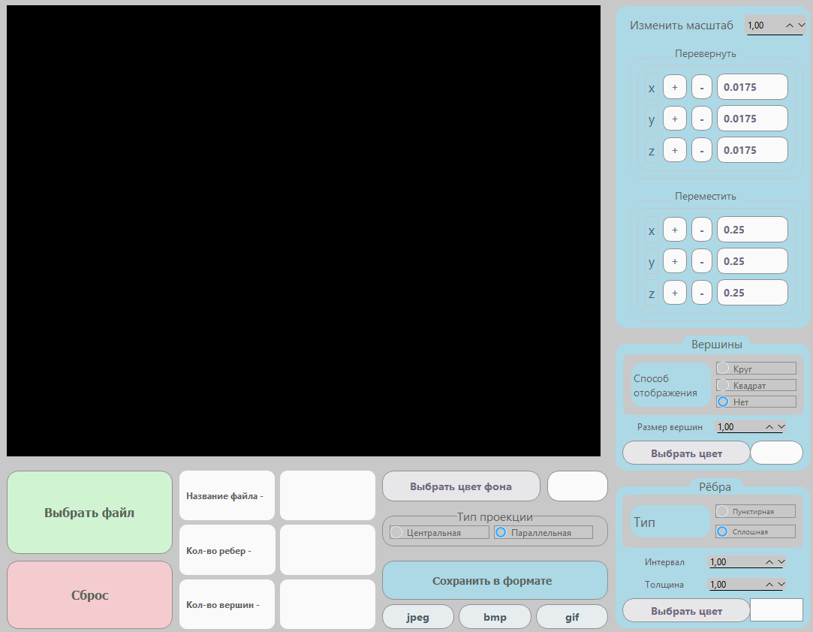
Выбор (файла) для работы с моделью
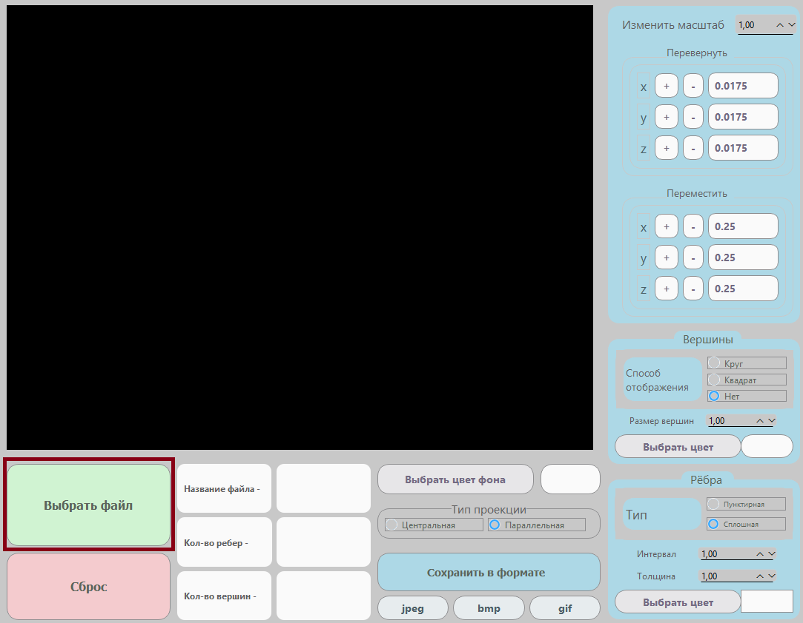
Сброс (файла) для работы
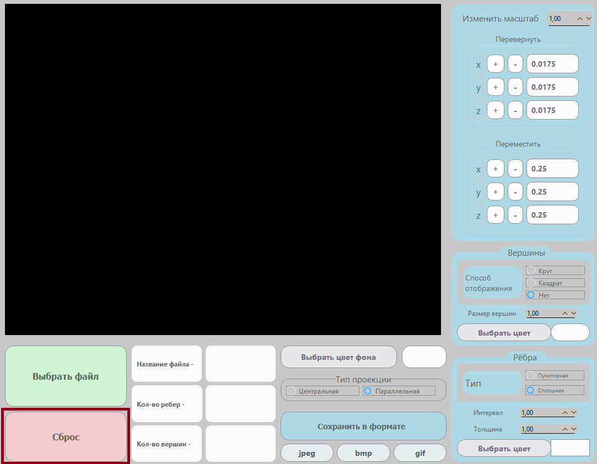
3D Viewer v2.0 поддерживает следующие возможности:
- Загрузка объектов формата
- Выбор (цвета) фона для модели
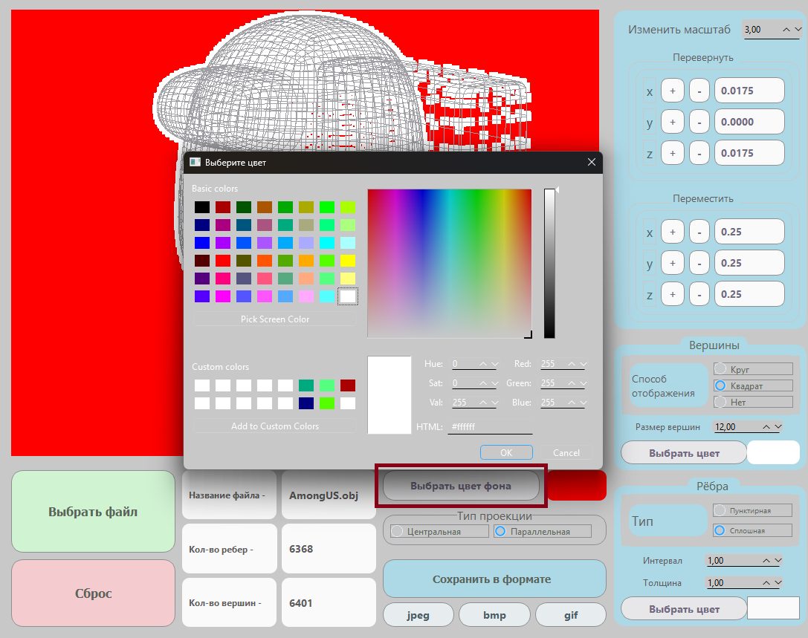
- Перемещение модели на заданное расстояние относительно осей (X, Y, Z)
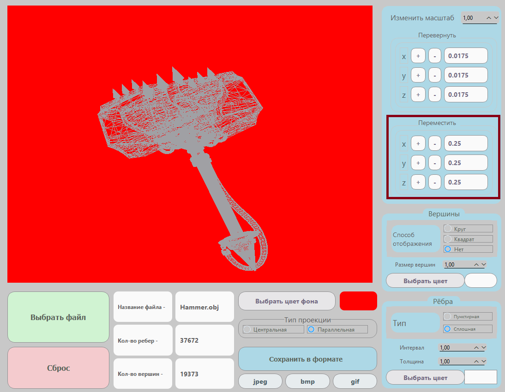
- Повороты модели на заданный угол относительно осей (X, Y, Z)
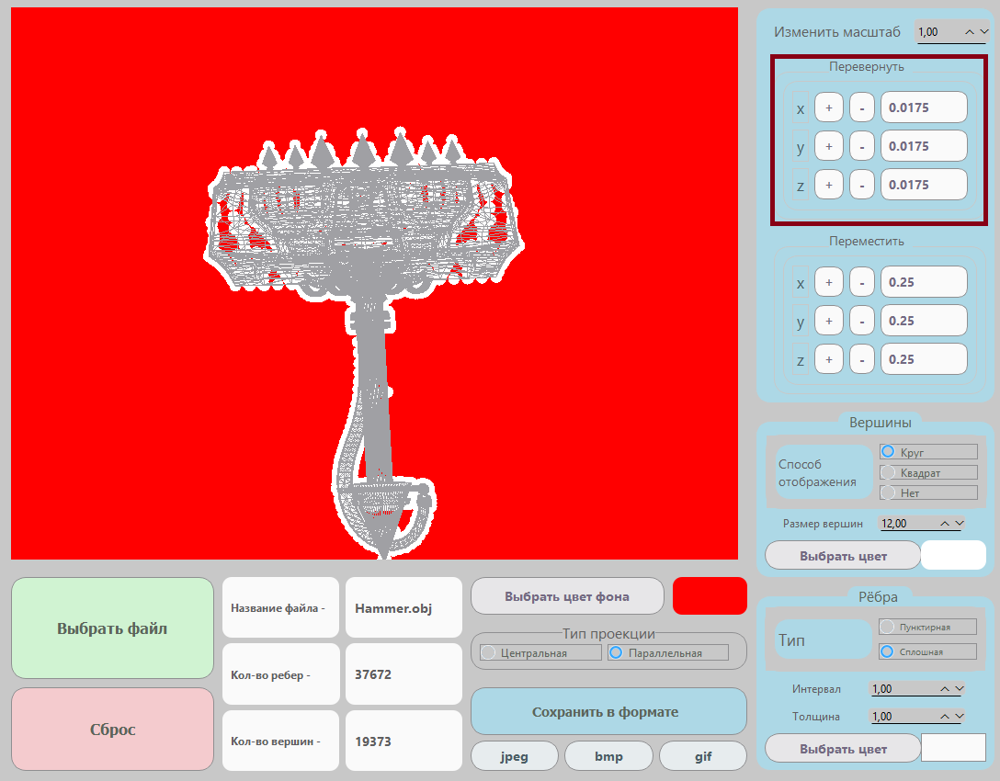
- Пользовательский выбор (масштабирования) модели
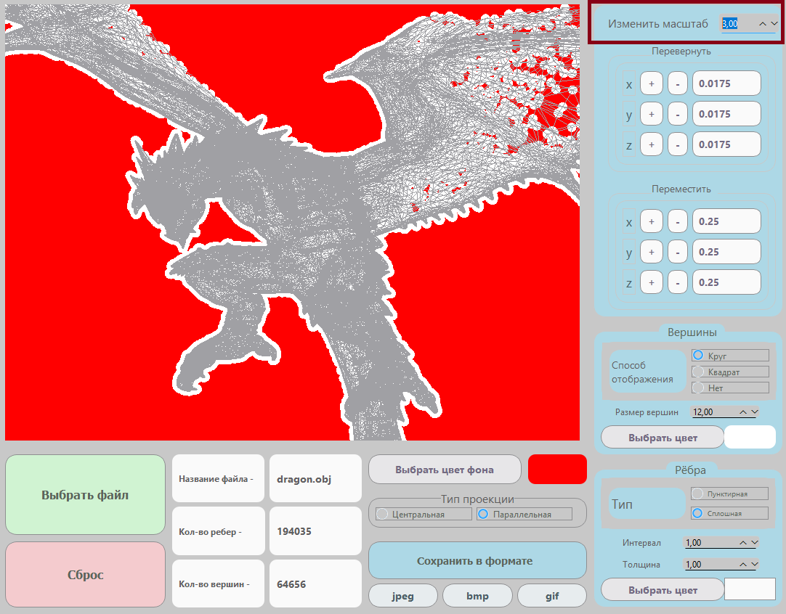
- Возможность выбора пользователем способа отображения, размера и цвета (вершин) модели
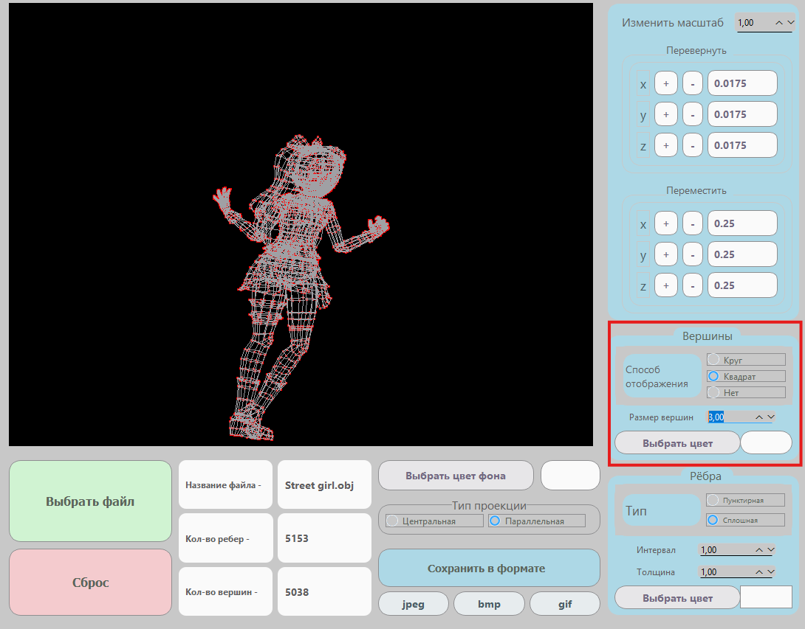
- Возможность выбора пользователем типа, интервала, толщины и цвета (рёбр) модели
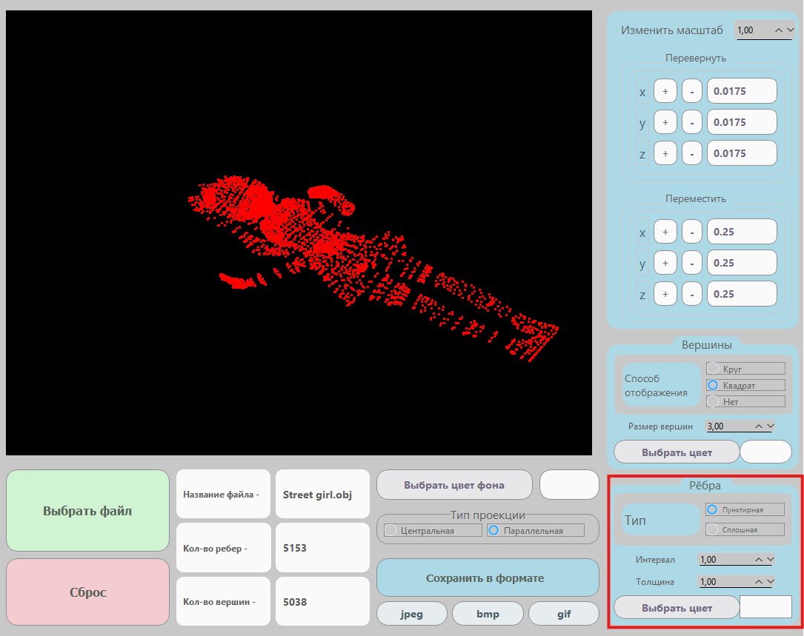
- Выбор варианта отображения (проекции)
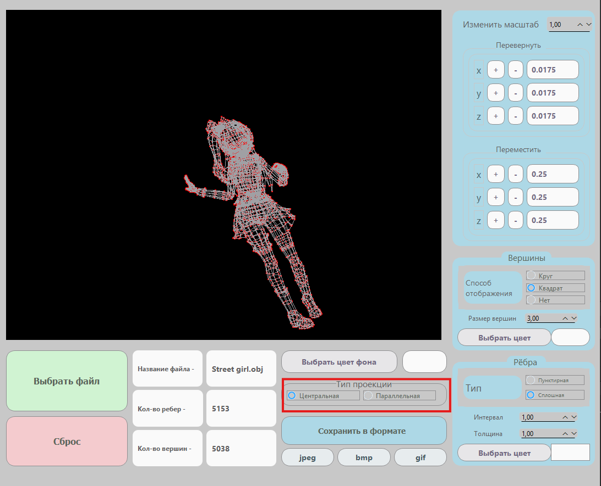
- Выбор (формата) сохранения модели
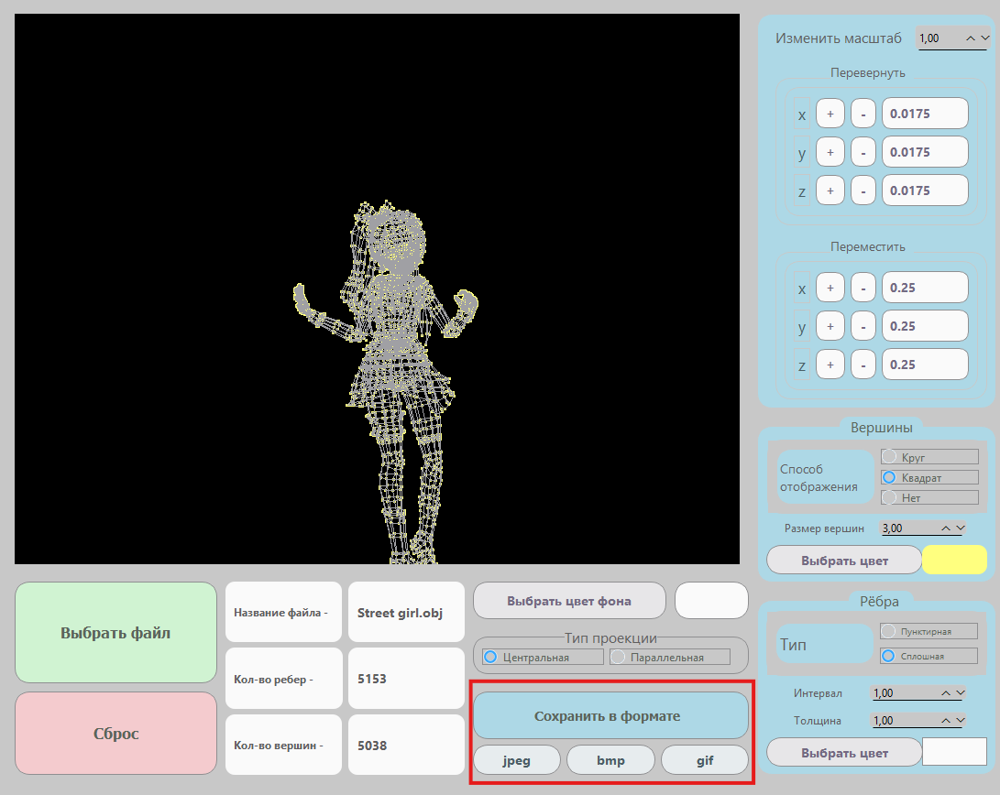